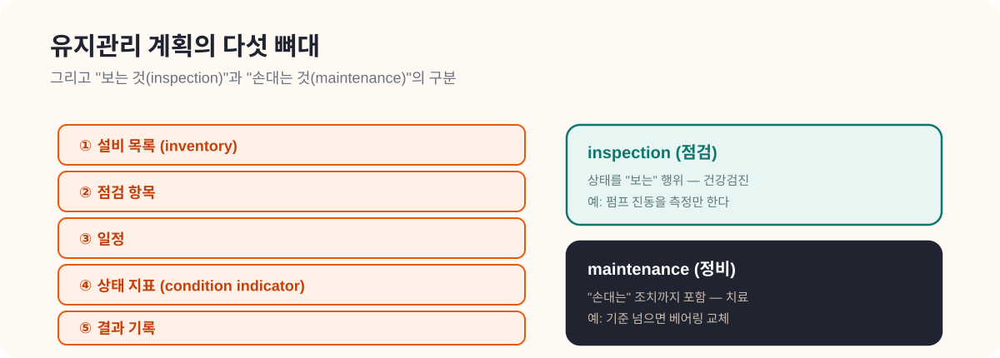

CHAPTER 09 · 설비·점검 심화
09. ASHRAE 180 요약
한 줄 요약
ASHRAE 180은 미국의 설비 유지관리 표준 문서다. 핵심 메시지는 두 가지 — "보는 것(inspection)과 손대는 것(maintenance)은 다르다", 그리고 "설비 건강 상태(condition indicator)를 보고 우선순위를 정하라". HeatGrid의 출력이 단순 경보가 아니라 "계획 문서"에 가까워야 하는 이유가 여기 있다.
- ASHRAE 180: 설비 유지관리 계획을 어떻게 짜야 하는지 정해둔 미국 표준.
- inspection(점검/관찰): 상태를 "보는" 행위. 아직 손은 대지 않음. (예: 진동 수준을 측정)
- maintenance(정비): 실제 "손대는" 조치까지 포함하는 더 넓은 개념. (예: 베어링 교체)
- 설비 inventory(설비 목록): 관리 대상 설비들을 정리한 목록.
- condition indicator(상태 지표): 설비가 얼마나 건강한지 보여주는 신호. (예: 진동이 점점 커지면 상태 악화 지표)
- 작업 오더(work order): "이 설비를 이렇게 점검·정비하라"는 구체 지시 문서.

왜 이 문서를 읽는가
HeatGrid가 진짜 운영 Agent가 되려면, "삐—" 하는 단순 경보를 넘어 계획 문서와 작업 오더 수준의 출력을 만들 수 있어야 한다. ASHRAE 180은 그 계획 문서가 어떤 뼈대를 가져야 하는지 보여준다.
유지관리 계획의 다섯 뼈대
ASHRAE 180에 따르면 제대로 된 유지관리 계획에는 다음이 들어간다.
- 설비 목록(inventory) — 무엇을 관리하는가
- 점검 항목 — 무엇을 보는가
- 일정 — 언제 보는가
- 상태 지표 — 어떻게 건강을 판단하는가
- 결과 기록 — 무엇을 남기는가
inspection vs maintenance
이 둘을 구분하는 게 이 표준의 핵심이다.
inspection (점검)
상태를 <strong>관찰</strong>하는 행위. 예: 펌프 진동이 얼마나 되는지 측정만 한다. 아직 손은 안 댄다.
maintenance (정비)
실제 <strong>조치</strong>까지 포함하는 넓은 개념. 예: 진동이 기준을 넘으면 베어링을 교체한다.
쉽게 말해 inspection은 건강검진, maintenance는 치료까지 포함한 것이다. 둘을 섞으면 "봤다"와 "고쳤다"가 뒤죽박죽돼서 다음 판단이 어려워진다.
상황으로 이해하기: 같은 온도 이상, 다른 우선순위
두 설비에 똑같이 "온도 이상"이 떴다. 그런데 한 설비는 이미 상태 지표(condition indicator)가 나빠져 있던 설비다. 이 경우 단순 관찰 대상이 아니라 <strong>우선 출동 대상</strong>으로 올리는 게 맞다. 같은 증상도 "그 설비가 평소 얼마나 건강했나"에 따라 대응이 달라진다 — 이 차이를 읽는 게 바로 운영 판단이다.
PreDist와 연결하면
PreDist에서 반복되는 이상 패턴을 condition indicator 후보로 삼으면, 설비를 "관찰만 필요"와 "즉시 조치 필요" 두 단계로 나누는 기준을 세울 수 있다. 데이터가 곧 상태 지표가 되는 것이다.
HeatGrid에 적용하기
- 작업 오더에는 설비 ID, 점검 항목, 상태 지표, 기록 형식이 함께 있어야 한다.
- 단순 경보보다 운영 계획 문서에 가까운 출력이 필요하다.
- 나중에는 설비별 상태 지표 라이브러리를 따로 둘 수 있다.
스스로 확인하기
- inspection과 maintenance의 차이를 설명할 수 있는가?
- condition indicator가 왜 중요한지 말할 수 있는가?
- HeatGrid 출력이 왜 계획 문서에 가까워야 하는지 이해했는가?
더 깊이 보고 싶다면
- 10_Anomaly_Detection_Review_요약.md — 이상 패턴을 상태 지표로 번역하기
- 07_IEA_DHC_Connection_Handbook_요약.md — 기록이 재계획의 입력이 되는 이유